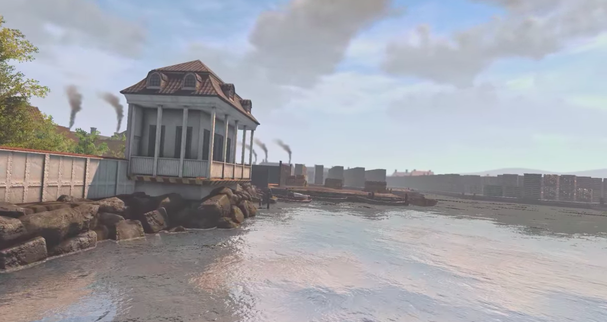
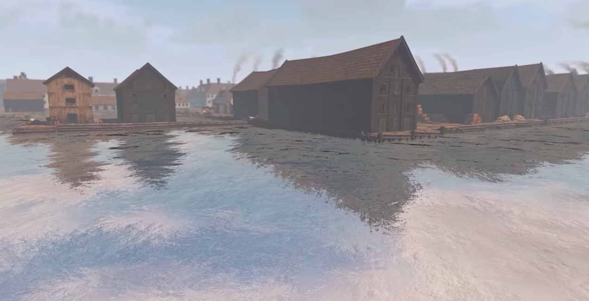
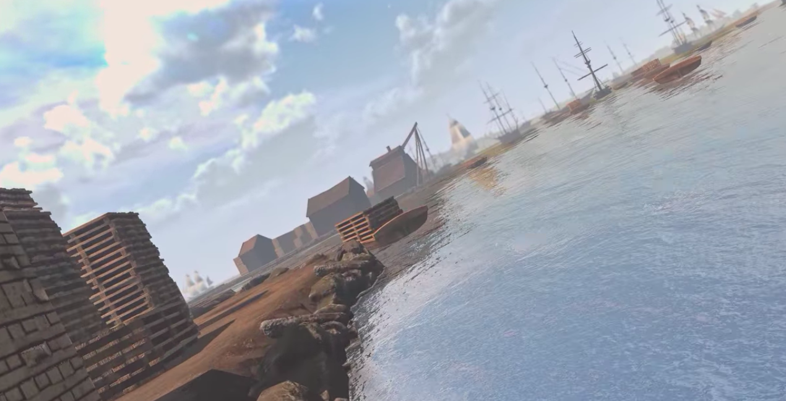
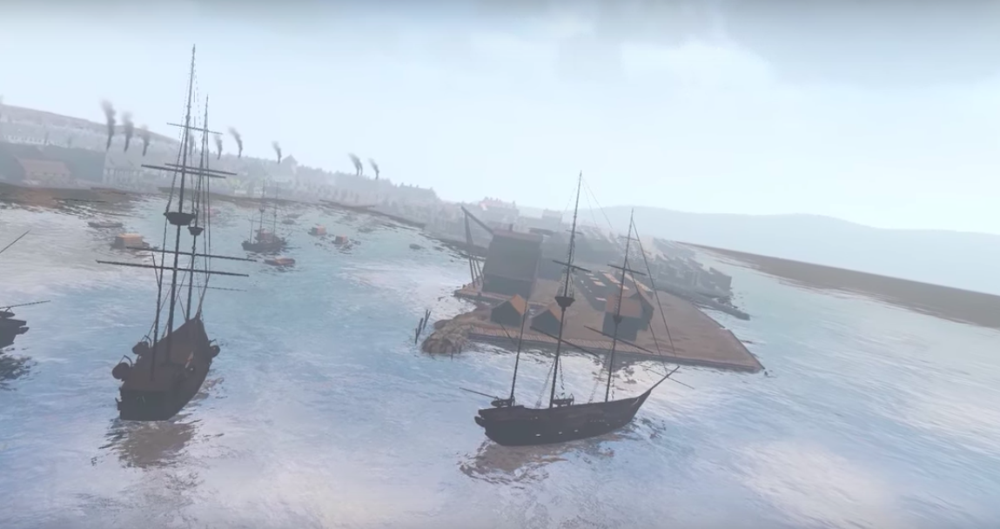

Hva går undervisningsopplegget ut på?
Møter kompetansemål
Læreplan i historie - fellesfag i studieforberedende utdanningsprogram (HIS1-02)
Tverrfaglighet
Dette undervisningsopplegget trekker også på ferdigheter innen matematikk og økonomi.
En av de største endringene som skjedde gjennom 1700-tallet var økt handel – både innenriks, mellom land i samme region og globalt. Veksten i handelen medførte at produsenter hadde mulighet til å nå flere og større markeder. Slik kunne de selge mer og få større fortjeneste. For forbrukere betydde den økte handelen at flere varer ble tilgjengelig, og også at varene ble tilgjengelig i større mengder. Økningen i tilbud innebar større konkurranse, og i mange tilfeller lavere priser.
Eksporten
For Norge var trelast, fiskevarer, metaller og skinn og lær de største eksportvarene. Mengdene som ble eksportert av disse økte gjennom 1700-tallet. Prisene internasjonalt svingte gjennom århundret. Generelt var prisene høye når det var kriger i Europa og verden som hindret handelen. I fredsår når konkurransen var større var prisene lavere.
Nettopp prisforskjellen i krigs- og fredsår spilte en viktig rolle for den norske økonomien. Årsaken var at Danmark-Norge førte en nøytralitetspolitikk, det betyr at de forholdt seg nøytrale i kriger. Nøytraliteten gjorde det mulig for danske og norske skip å handle også med krigførende stater. Norske handelsmenn fikk dermed stor fortjeneste på varene som ble solgt i utenlandske marked i krigsår. I tillegg tjente de godt på å transportere varer for krigførende land, også fordi prisen på frakt var høye i krigsår.
Importen
Til Norge kom det også flere varer og utvalget ble større. Korn var den viktigste innførselsvarer til alle havnene. Dette fordi norske gårder ikke klarte å produsere nok til å dekke landets eget behov. Gjennom 1700-tallet økte også innførselen av korn. Dette var dels fordi befolkningen økte, men og fordi flere gikk delvis bort fra gårdsdrift. I stedet produserte de andre varer som de solgte til markedet.
Andre varer som ble innført var halvfabrikata. Dette var gjerne innsatsvarer som var nødvendig i annen produksjon. Eksempler på slike varer var salt som gikk til salting av fisk for eksport, alun som bl.a. ble brukt i farving av tekstiler og garving av lær, samt lin- og hampfiber som ble brukt bl.a. til seil, klær og til og med tetting av hus og båter. Ferdige varer som tekstiler, knapper, parfyme og annet kom også i stadig økende mengder. Det samme gjaldt varer fra oversjøiske steder som tobakk, sukker, kaffe og ulike krydder.
Ser man på innførselen av varer i tollarkivene er det likevel tydelig at toppen synes å ha vært i midten av århundret. Det er i mange tilfeller en klar nedgang i siste halvdel. Dette forklares trolig av at det på 1760 og 1770-tallet ble innført strenge tollover som hadde som hensikt å begrense import av ferdig varer fra utlandet. Selv om innførselen sank kraftig, er det likevel trolig at det kom mindre av slike varer til Norge. De kom da ulovlig- som smuglede varer. Dette støttes av samtidige kilder som både forteller om økende forbruk av importvarer i stadig flere samfunnsgrupper, og at smugling var svært utbredt.
Oppgaver:
Priser finner du her.
Ha i mente at disse prisene var de som ble betalt i de norske byene, ikke i utenlandske marked. Hvordan tror du det har spilt inn på prisen?
Vil du lese mer?
Se NDLA.no sine undervisningsopplegg om Norsk næringsutvikling 1500 til 1800.